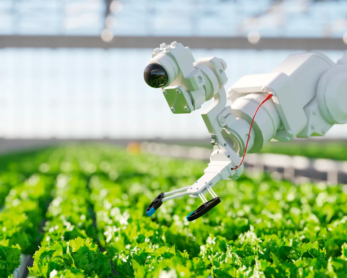
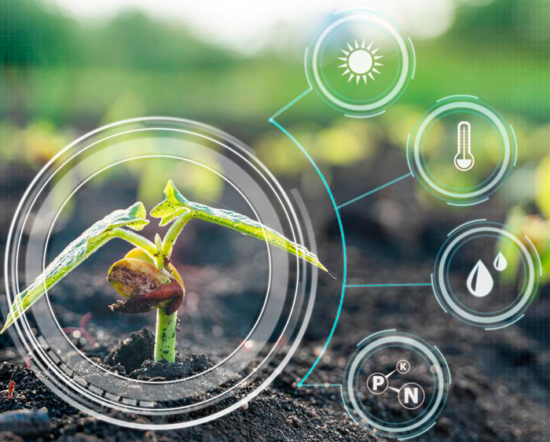

Conheça as atividades programadas
Palestra: Inteligência Artificial Aplicada ao Agronegócio
A detecção de pragas em lavouras cafeeiras é um problema relevante na agricultura, pois as pragas causam perdas e sua detecção precoce reduz custos e uso de defensivos agrícolas. O cafeeiro é uma cultura de grande valor social e econômico no agronegócio mundial, com área plantada de 10,9 milhões de hectares e produção mundial de 153,6 milhões de sacas de 60 kg de café beneficiado na safra 2016. Em 2017, o café verde exportado no mundo atingiu 119,5 milhões de sacas de 60 kg, produzindo uma receita brasileira de US$ 5,23 bilhões de dólares. Apesar do Brasil ser o maior produtor de café, representando 32,7% do que é produzido mundialmente, a produtividade de 25 sacas por hectare é baixa, sendo influenciada pela ocorrência de pragas. Um sistema de aprendizado e visualização computacional visa prover uma detecção de pragas em lavouras cafeeiras para aeronaves. Desta maneira, usando imagens aéreas obtidas por VANTs (Veículos Aéreos Não-Tripulados) para detectar as pragas encontradas nos cafeeiros.
Palestrante: Jefferson Rodrigo de Souza
Possui graduação em Ciência da Computação pela Universidade Católica de Pernambuco (2007), Mestrado em Ciência da Computação pela Universidade Federal de Pernambuco (2010), Doutorado em Ciência da Computação pela Universidade de São Paulo (2014) e pós-doutorado pela Universidade de São Paulo (2015). Durante o doutorado, passou um ano como pesquisador visitante na School of Information Technologies da The University of Sydney (2013).
|  |
 |
|---|
Minicurso: A Física no Enem sob perspectiva discursiva: leitura e compreensão
Propomos, com o presente trabalho, amparados em estudos de caráter discursivo (PÊCHEUX, 1990), compreender e mostrar o funcionamento do sentido em questões de física do Exame Nacional do Ensino Médio (ENEM). Mais especificamente, iremos tratar de caminhos de interpretação que ao aluno vestibulando cumpre perfazer durante resolução de questões presentes nesse formado de exame em vigor no Brasil desde 1998. Nossa hipótese de trabalho é a seguinte: embora seja consensual a noção de leitura como atribuição de sentidos para textos, consideramos ampla sua aplicação, pensada, por exemplo, em ato de decidir a alternativa que responde dado quesito avaliativo. Para desenvolver a discussão, faremos: (i) exposição teórica a respeito do que seja ler, em perspectiva discursiva; (ii) análise e resolução de questões-ENEM, do conteúdo Física, procurando mostrar dali modos de interpretação necessários ao vestibulando (sentidos atravessando o dizer “dado”). Tudo isso, enfim, fala da importância de interpretar o dizer, com olhos em informações que o atravessam; informações, no caso, implícitas, mas que fazem parte de toda construção interpretativa.
Convidados: Profa. Ma. Jessiara Garcia e Prof. Dr. Hélder Sousa Santos
Oficina: A vida e a obra de Carolina de Jesus
Apresentar as obras da autora Carolina de Jesus.
A infância pobre, o sucesso editorial repentino de uma mulher semianalfabeta, a fama e o fim de vida no ostracismo. Em "Carolina: uma biografia", o jornalista Tom Farias narra a complexa e intensa trajetória da escritora Carolina de Jesus.Canal do Youtube: SNCT 2020